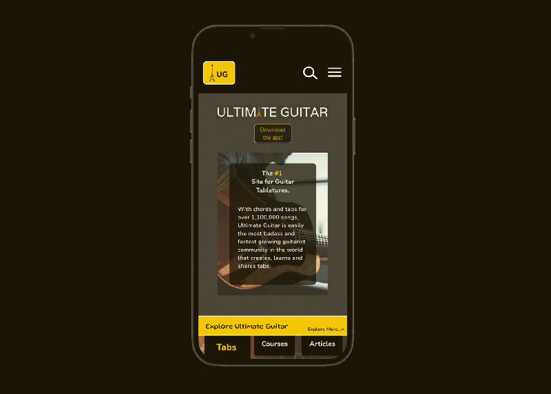
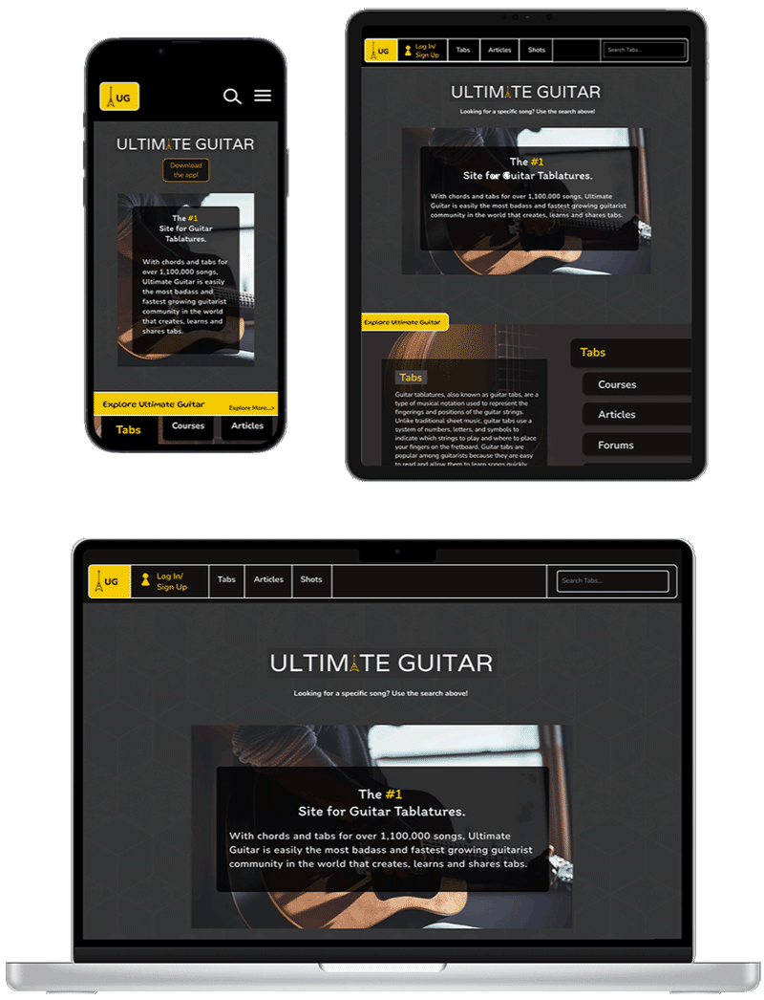

Ultimate Guitar Redesign
The final project for my user interaction class was to redesign a few pages of a website of our choice. I chose the website Ultimate Guitar which is an online database of millions of guitar tablatures and chords. You can access this site at https://www.ultimate-guitar.com/. I decided to pinpoint the average user as a casual guitar player that uses this site to play and sing their favorite songs. Then I looked into how the original site was laid out.
Critique
Origional Site, all content belongs to Ultimate Guitar
Though there was a clear color scheme and theme, the website was a mess of text and links that were difficult to sort through. There was no easy flow of information throughout the page, which would cause most users to ignore the mass of information and stick to the basic feature they knew would help: the search bar.
There were several interesting features that the website offered such as the ability to share short videos, community forums, and general lessons on guitar playing. Overall, the site needed a better flow and a limit on how much information was displayed on the front page.
Process and Improvements
With Figma, I created a prototype of five of the sites pages in mobile, tablet, and desktop forms. First, I severely decreased the amount of information present on the homepage. I wanted to keep the dark design features of the original site since the existing color scheme was an iconic look that was associated with the site. Then I went into the filter system on the site and created a more interactive and visual representation of the songs that would appear based on a search.
I did this with graphics, switching up the background, and small dynamic interactions. I also adjusted the typography to reflect playfulness but also to add a sense of organization and hierarchy throughout the page. My goal was to achieve a sleek and logical design, that still matched the color scheme and brand of the original site.
Reflection
I'm proud of how this homepage turned out. It took many tries for me to get this right, including a whole different prototype with a totally different vibe before I got here. I found that taking inspiration from other great sites was extremely helpful in my design process. I often got caught up on nitty gritty details and reached my most successful design points when I took a step back. I feel I got a very strong grasp for how my design process works. I also learned a lot about Figma and its animations and interactions. This project was a challenge, but once I got into the flow, I really enjoyed myself.